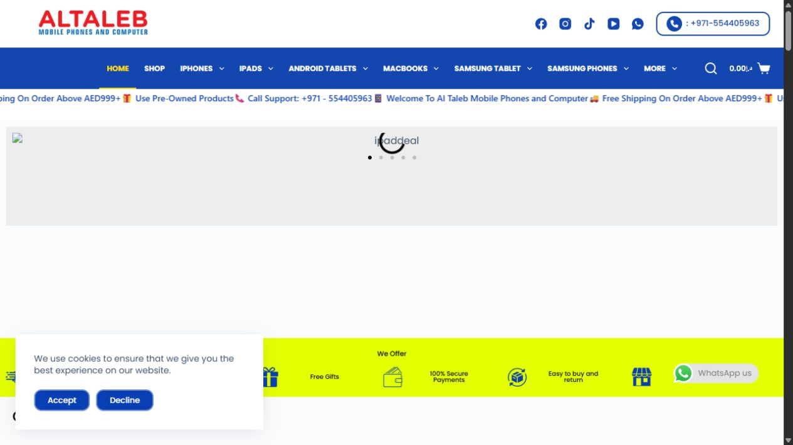
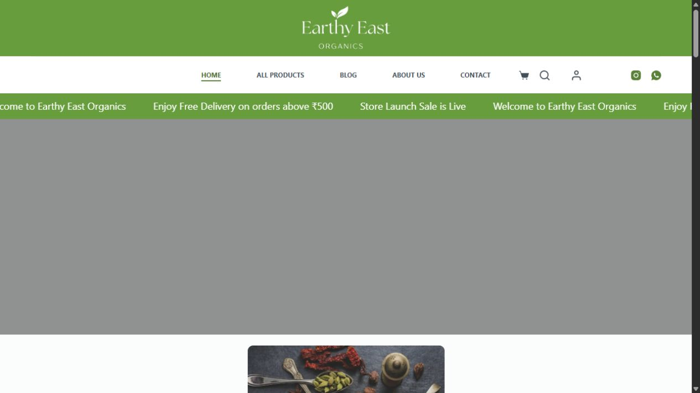

High-performance websites
Modern business websites, landing pages, service pages, and funnels built with speed, SEO, and conversion clarity.
Website design. Development. AI automation.
Webcentrikx builds fast-loading websites, clear offers, and AI-powered workflows that help your business capture leads, respond faster, and reduce manual work.
New website lead captured
AI qualifies and routes the inquiry
Team gets instant follow-up tasks
The gap
A slow website loses visitors before they understand your offer.
A confusing message makes good leads leave without taking action.
Manual follow-ups waste time and create missed opportunities.
What we build
Modern business websites, landing pages, service pages, and funnels built with speed, SEO, and conversion clarity.
Custom assistants for lead qualification, FAQs, customer support, service recommendations, and internal task handling.
Automated workflows for forms, email, WhatsApp, CRM updates, appointment booking, and team notifications.
Selected work

E-commerce website
Mobile, laptop, and electronics shopping experience with product categories, offers, and direct customer actions.

Organic store website
Clean online store for organic products with focused navigation, cart actions, and a simple shopping path.
AI automation
We map how leads enter your business, where your team spends time, and which repetitive steps can be automated. Then we connect the right tools so your website, CRM, email, WhatsApp, calendar, and AI assistant work together.
Tech stack
From fast custom websites to e-commerce stores and workflow automations, Webcentrikx builds with proven tools that are flexible, scalable, and easy to manage.
Fast custom websites, landing pages, and SEO-focused frontend builds.
Product stores, conversion-ready storefronts, and e-commerce setup.
Business sites, service pages, blogs, and easy content management.
Custom automations, internal workflows, lead routing, and AI actions.
No-code integrations for forms, email, CRM, sheets, and notifications.
Interactive interfaces, dashboards, portals, and custom web apps.
Premium marketing pages and fast visual builds for content teams.
Visual automation scenarios for operations, marketing, and sales tasks.
Process
We understand your business, offer, audience, and current workflow.
We shape clear copy before designing screens so the website has a strong message.
We design and develop a responsive, lightweight website optimized for loading speed.
We connect tools and AI workflows that reduce manual follow-up and missed leads.
Ready when you are